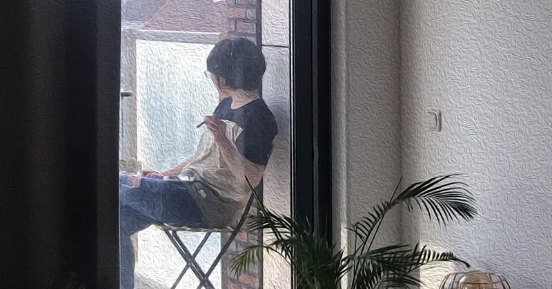
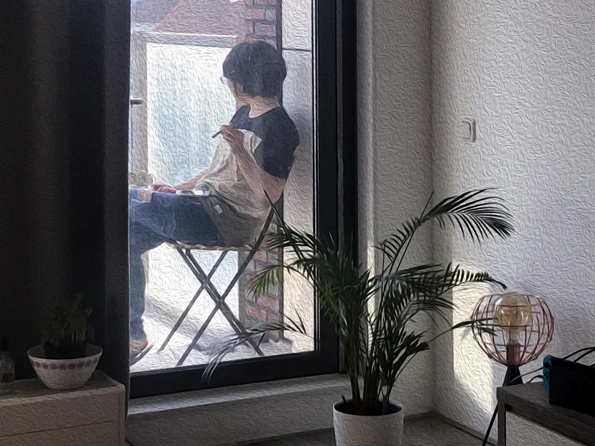

Daily Life | You Have to Be Prepared for Cannabis to Help You. Maybe?

This year I gave myself a break and stayed in the Netherlands for three months. As a tourist, I couldn't help wanting to experience "cannabis", which is legal to possess here. This post is mainly a quick record of my experience, and I'll leave the factual stuff to other, more professional articles!
Although trying cannabis was on my Netherlands to-do list, I did no research at all at the start. At a dinner in Amsterdam with a friend's friend, I mentioned it, and with their introduction and help I got some.
Super basic knowledge, not detailed or professional
Cannabis is simply divided into "high" and "sleepy" kinds. With no sleep problems, I naturally said loudly, "I want the high one!" What I bought was joints mixed with tobacco, kept in a plastic bottle like a test tube, about 7 euros a tube. My friend said you can share one with friends, and if you have no friends you can smoke it over several sessions. In any case, it's definitely not meant to be finished all at once.
The most basic advice for smoking cannabis is to do it "in a safe place (such as at home), with a trusted friend or family member nearby", because everyone reacts differently, and this guards against danger. As for when to use it, the articles I looked up mention times like after waking up, after work, before a shower, before a movie, before dinner, before sleep and so on, all recommended times to try.
Although I got the joints early on, going abroad is a rare chance, I always had lots planned, and the cannabis was forgotten off to the side until two weeks before I went home, when I hurriedly began my smoking project. If you get the chance to try it, I suggest searching for some guide to smoking cannabis first. It always gives first-timers a bit of encouragement (?) and confidence.
Is the cannabis senpai really taking me flying?
The conclusion first: the effect wasn't obvious on me. At first I was disappointed, and tried to find out which step had gone wrong, asking lots of friends and gradually working it out. In the end I was no longer disappointed. Instead I felt satisfied because I'd learned something, like a child coming across something new. (As an adult, this kind of experience is rare.)
I smoked 4–5 times over about two weeks, increasing the dose almost every time and constantly adjusting how I smoked (for someone who has never smoked cigarettes, this takes practice). And to avoid wasting my lovely daytime on the side effect of cannabis (about 2–3 hours after smoking I'd suddenly get extremely sleepy, almost instantly blacking out), I only smoked before movies, before sleep and before cooking.
When I asked a born-and-bred Dutch person about the effect of cannabis, he said: "(It's like) when you imagine you're at the beach, you're at the beach." When I talked about it with a friend who had read books on psychedelics, he said: "(Roughly speaking) before psychedelic therapy, you have to prepare, and confirm what the problem and goal are, so that the experience can make sense."
The two came together into a reference answer that pointed out my problem: "no purpose".
Every time I smoked, it was like handing in homework. I'd take a lighter and the joint out to the balcony, watching the edge of the paper being eaten away by the burning, and thinking, "Did I smoke more this time than last time?"

At first, the only effect I remember is that after smoking I went to cook dinner, and when I was peeling thin green asparagus, it felt like my eyes were a camera with a huge aperture: everything was blurred except the spot I was peeling. I didn't need to focus (= stare hard) or use a short focal length (= bring my eyes close to the object) to get a super depth of field. This feeling was amazing, and you could say it defied physics, right?
Next, after smoking I watched a movie, the live-action Thermae Romae starring Hiroshi Abe. Even though I'd read the manga and pretty much knew the plot, I laughed like crazy! Was that the effect of cannabis? I'm not sure!
The last experience I only remembered later. While watching Thermae Romae, I opened two special beers. As someone who once tried hard to understand coffee and failed (I can only tell sour from bitter, not floral, fruity, caramel and so on), and who doesn't quite understand beer either (the only thing I've ever said is "this can has more malt flavour, this one is lighter" when drinking two cans at once), I took a sip of one of the beers and said: "This tastes like the smell that hits you when the automatic glass door of an artsy general store opens, and the shop's main colour (the walls and so on) is a misty grey-green."
It blew my mind. Was it that the beer itself had a special flavour, or the effect of the cannabis?
Although I can't prove whether the last two experiences were affected by cannabis, I feel satisfied. Maybe it's also because almost all my memories of my time in the Netherlands are happy ones!
Further reading / references
An episode of Explained (流行大百科) on Netflix is about cannabis
How to Change Your Mind (Chinese edition, 《改變你的心智》)